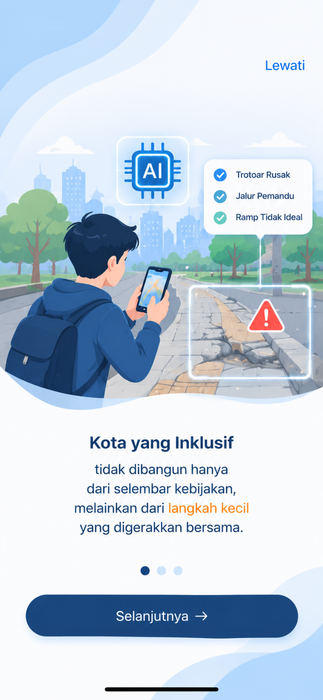

9:41

Akses Setara, Kota Inklusif
Masuk ke akun Anda
Masuk dengan akun terdaftar atau lanjutkan sebagai demo.
atau masuk dengan
Belum punya akun?
Akses Setara, Kota Inklusif
Buat akun AKSESTAMA
Daftar untuk menyimpan profil dan kontribusimu di perangkat ini.
Akun disimpan di browser ini. Peran dan validasi akses hanya simulasi; jangan gunakan kata sandi penting.
Sudah punya akun?
DASHBOARD UTAMA
Surabaya
Ringkasan akses kota
Pantau kondisi aksesibilitas Surabaya
Indeks Aksesibilitas Kota
78.4
Baik
Koridor Ketintang – Wonokromo terpantau aktif
+6.2% bulan ini
APBD terkunci
Rp 4,82 M
Titik prioritas
14
Kepatuhan Permen PUPR No. 14/2017
142 / 181 titik
Peta Sebaran Defisit Akses
Peta skematis · ADS · Ketuk penanda untuk melihat detail
Kritis
Perlu perhatian
Baik
Lokasi dan temuan terpilih
Halte Ketintang Barat (Ramp 14.2°)
Melanggar batas maks 7° Permen PUPR • Tiket #EMUS-8841
Peta Akses
Fasilitas publik dan rekomendasi rute inklusif
Koridor Ketintang – Wonokromo
Peta skematis · mode medan hanya ilustrasi
Ramah akses
Perlu perhatian
Titik awal demo
Memuat fasilitas...
- Kondisi trotoar
- Jalur pemandu
- Ramp / bidang miring
Rekomendasi rute
Pilih fasilitas pada peta
Rute dan kondisi adalah data contoh, bukan navigasi GPS atau verifikasi lapangan.
Fasilitas di area
Aksi Muda
Kontribusi, tantangan, dan pencapaianmu
Detail pencapaian pengguna
Memuat profil...
Total poin
Relawan Pemula
0
poin
Perjalanan kontribusimu dimulai di sini.
0%
+50 poin untuk setiap laporan yang dinyatakan valid.
Laporan valid
0
kontribusi terverifikasi
Peringkat demo
—
di leaderboard lokal
Badge pencapaian
0 terbukaMisi minggu ini
Leaderboard relawan
peringkat demoRiwayat kontribusi
poin hanya untuk laporan validValidasi laporan (simulasi Bappeda)
demo lokalValidasi hanya untuk demonstrasi. Sistem produksi perlu petugas dan backend terotorisasi.
AI Computer Vision Audit
Standar Permen PUPR No. 14/PRT/M/2017
Buat Laporan Kerusakan
Foto fasilitas publik untuk pemeriksaan awal.
Laporan tersimpan
di perangkat iniBelum ada laporan tersimpan.
● GPS: -7.3114, 112.7289
Skor simulasi: 98,4%
PELANGGARAN TERDETEKSI
Kemiringan Ramp: 14.2°
Batas Maksimal PUPR: ≤ 7.0° (Defisit +102%)
TIKET RESMI BAPPEDA TERBIT
#EMUS-2026-8841
Skor ADS 92/100 (Prioritas Tinggi) otomatis masuk antrean penguncian anggaran APBD Dinas PUPR.
Asisten Mobilitas & Verifikator
Ruang Inklusi+ Disabilitas
Navigasi real-time bebas hambatan, pemandu audio-haptik tunanetra, serta hak audit independen hasil perbaikan PUPR.
Rute Aman Kursi Roda & Tunanetra
98% Aksesibel
Stasiun Wonokromo → Kampus UNESA
1.4 km
✓ Ramp landai terverifikasi (5.2°) • ✓ Guiding block utuh • ✕ Menghindari galian Jl. Ketintang
Auditor Independen Disabilitas
Menunggu Uji Coba
Perbaikan Ramp JPO Darmo (#EMUS-8790)
Dinas PUPR melaporkan pengerjaan selesai. Konfirmasi kelayakan fisik di lapangan:
Dashboard Pemerintah
Pemantauan laporan dan tindak lanjut fasilitas publik
Peta persebaran kerusakan
Skema area Ketintang–Wonokromo · bukan peta navigasi
Kritis
Tinggi
Sedang
Perlu asesmen
Daftar laporan masyarakat
Pilih laporan untuk membuka detail dan tindak lanjut.
Pilih laporan
Status tindak lanjut
Menunggu
Rekap untuk evaluasi kebijakan
Klasifikasi prioritas adalah penyaringan awal demo, bukan keputusan teknis atau inspeksi resmi.
#EMUS-2026-8841
ADS Score: 92
Rekonstruksi Ramp & Guiding Block Ketintang
Estimasi Pagu Wajib APBD: Rp 185.000.000
Mesin Gamifikasi Aksi Muda
0 poin
Kontribusi Patroli Inklusi Anda
0
Audit tervalidasi
9
Target APBD
SKPI
Sertifikat
YP
Pengguna AKSESTAMA
Patroli Pemuda
Profil demo lokal
0
Laporan tersimpan
0
0 laporan valid
Data profil dan kontribusi tersimpan lokal di browser ini.
Profil dan akun
Kelola informasi, aktivitas, dan preferensi akun.
Layanan lainnya
Menu tambahan tetap tersedia melalui halaman Profil.
AKSESTAMA · AKUN LOKAL
Pusat Akun
Patroli Pemuda
Profil disimpan lokal di browser ini.
Notifikasi
Pembaruan laporan dan aktivitas lokal.
Notifikasi dibuat dari data demo dan laporan yang tersimpan di browser ini.
Riwayat laporan
Status laporan Audit Pintar akun ini.
Pengaturan akun
Preferensi tampilan, aksesibilitas, dan notifikasi.
Pusat bantuan
Panduan singkat menggunakan prototipe AKSESTAMA.
Bagaimana cara mengirim laporan?
Buka tab AI Audit, ambil foto atau pilih dari galeri, lengkapi data fasilitas dan lokasi, lalu jalankan analisis demo sebelum menyimpan.
Apakah hasil analisis AI sudah tervalidasi?
Belum. Analisis foto saat ini hanya demonstrasi lokal dan bukan model AI terlatih. Periksa kondisi langsung sebelum mengambil keputusan.
Kapan laporan mendapat poin?
Poin hanya muncul setelah laporan disimulasikan valid oleh peran Bappeda pada prototipe. Ini bukan validasi pemerintah yang resmi.
Siapa yang dapat melihat data saya?
Data fitur ini disimpan di penyimpanan browser perangkat dan tidak dikirim ke server. Pengguna perangkat yang sama dapat mengubah atau menghapusnya.
Butuh bantuan lebih lanjut?
Untuk prototipe lomba ini, gunakan panduan dan data demo yang tersedia. Kanal dukungan langsung belum terhubung.
Notifikasi sistem